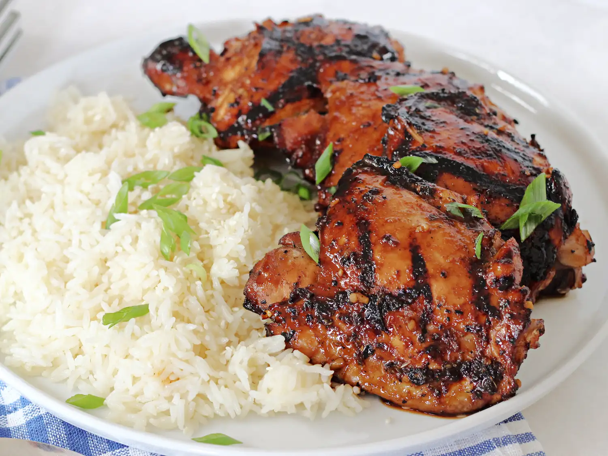

Shoyu chicken is a popular Hawaiian dish often served with rice. The word shoyu is Japanese for soy sauce. Let the chicken soak in the marinade for at least an hour; the longer the better.
Whisk soy sauce, brown sugar, water, onion, garlic, ginger, black pepper, oregano, red pepper flakes, cayenne pepper, and paprika together in a large glass or ceramic bowl. Add chicken thighs and toss to coat evenly. Cover the bowl with plastic wrap; marinate chicken in the refrigerator for at least 1 hour.
Preheat an outdoor grill to medium heat. Lightly oil the grate.
Remove chicken thighs from marinade; discard remaining marinade.
Grill chicken thighs on the preheated grill until no longer pink in the center and the juices run clear, about 15 minutes per side. An instant-read thermometer inserted into the center should read at least 165 degrees F (74 degrees C).